CORELS: A Cooperative Relative Localization System for Multi-agent Networks
Authors
- Xiaoxiang Li (EE, Tsinghua University) lxx17@mails.tsinghua.edu.cn
- Kai Ma (EE, Tsinghua University) mk19@mails.tsinghua.edu.cn
- Lingwei Xu (EE, Tsinghua University) xlw18@mails.tsinghua.edu.cn
- Yunlong Wang (EE, Tsinghua University) < ylwang_ee@tsinghua.edu.cn>
- Jian Wang (EE, Tsinghua University) jian-wang@tsinghua.edu.cn
- Yuan Shen (EE, Tsinghua University) shenyuan_ee@tsinghua.edu.cn
Abstract
Reliable and accurate spatio-temporal information is of great importance for multi-agent networks. Cooperative relative localization technologies provide a promising paradigm for such information, especially in GNSS-denied or infrastructure-free scenarios without absolute position reference. In this paper, we develop a cooperative relative localization system (CORELS) to achieve high-precision and low-latency localization capability for distributed multi-agent networks. A backbone-listener scheme is proposed to enable large-scale agents to complete high-precision localization. Backbone agents are selected to reduce information loss caused by malformed topology, and meanwhile a large amount of listener agents complete position and orientation angle estimation simultaneously. Different from traditional triangulation localization methods, CORELS has no prerequisites for position-known base stations. The localization accuracy is improved by a back calibration algorithm which makes use of the measurements and localization results of agents‘ neighbours. The distributed localization capability is extend to relative dynamic scenes by a dead reckoning filtering scheme, where spatio-temporal cooperation are accomplished by information fusion of ranging, angle and inertial navigation measurements. Moreover, we implement CORELS on a low-cost hardware platform. Extensive simulation and real-world experiments demonstrate that the proposed system achieves decimeter-level relative localization, which is close to the theoretical Cramer–Rao lower bound limit.
Contents
Hardware Implementation in Static Scenes
Hardware Implementation in Dynamic Scenes
Architecture
| The CORELS architecture |
|---|
| 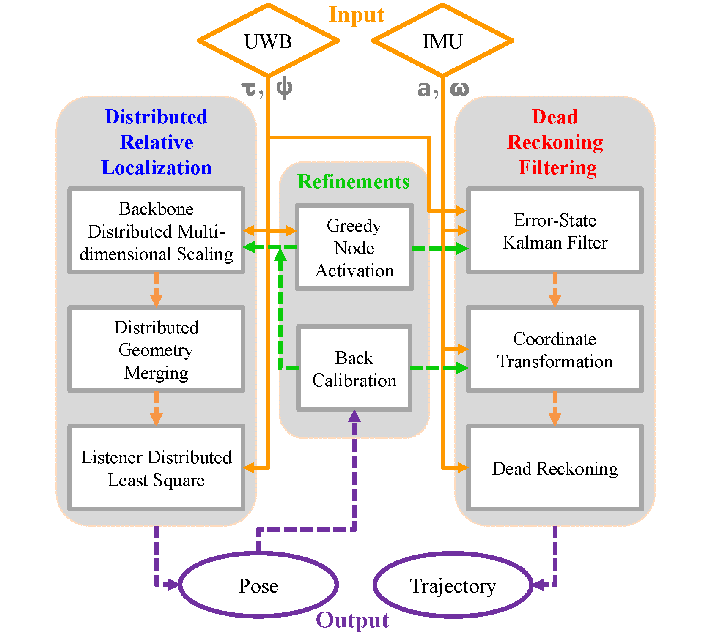 |
| The Backbone-Listener architecture |
|---|
| 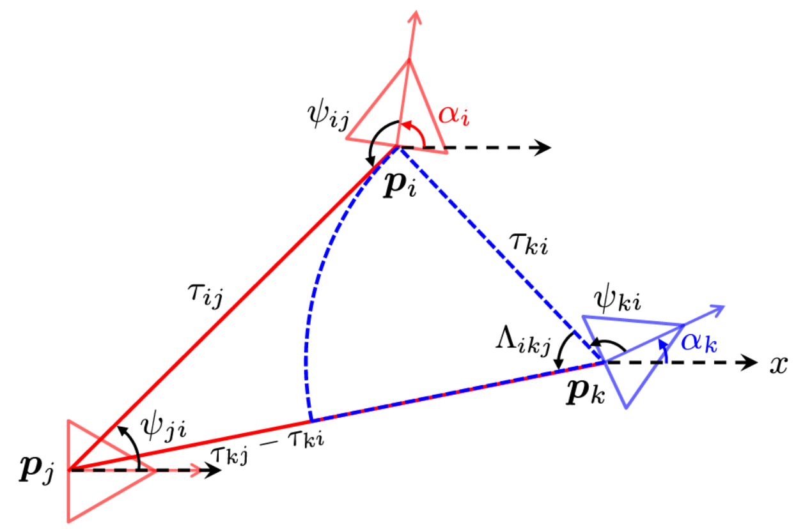 |
| The dead reckoning filtering scheme |
|---|
| 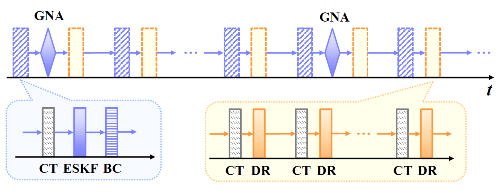 |
| llustration of the coordinate transformation |
|---|
| 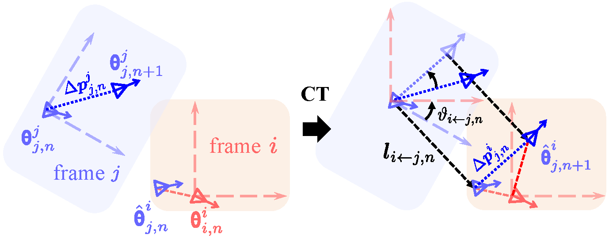 |
Simulation Results
Node Activation Strategies
| SPEB comparison for different node activation strategies |
|---|
 |
Localizaition performance of the distributed relative localization algorithm for static scenes
| RMSE distribution of TDoA-based algorithm | RMSE distribution of TDoA-AoA-based algorithm | RMSE distribution of the proposed algorithm |
|---|---|---|
| 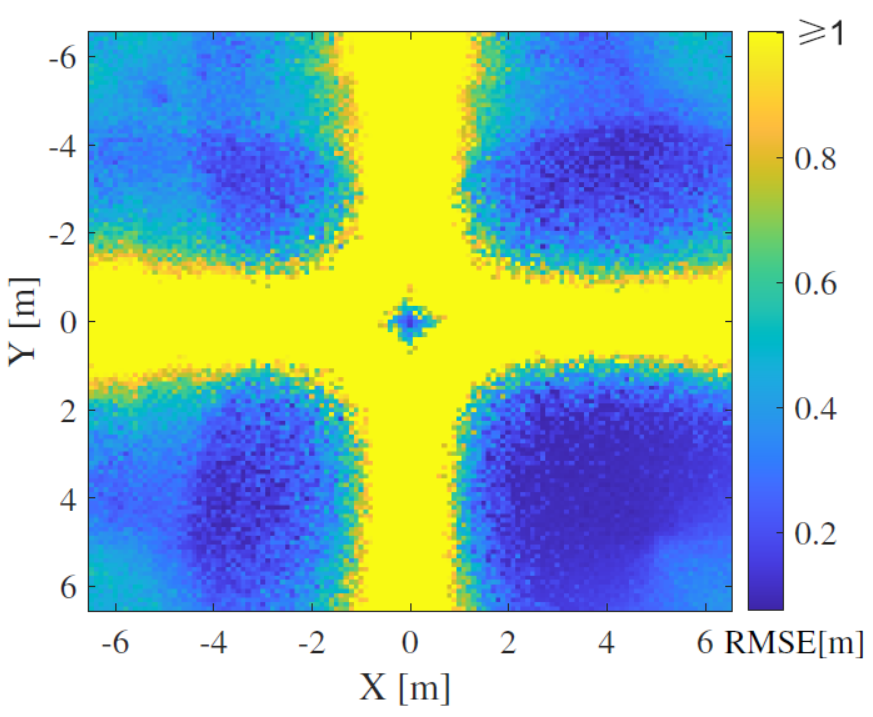 | 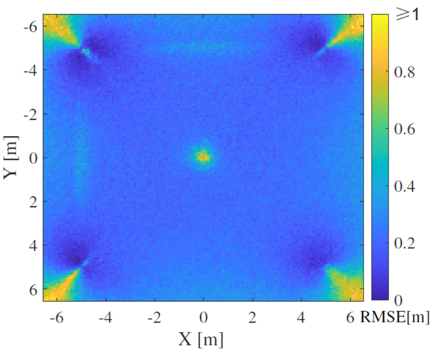 | 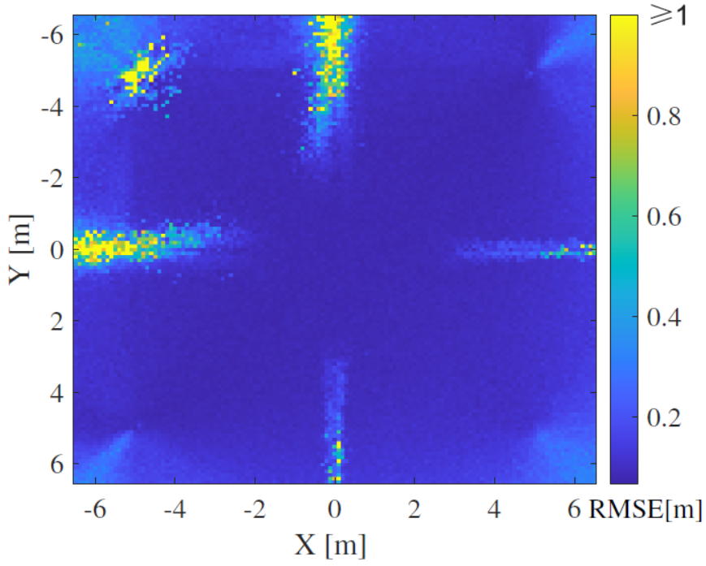 |
| CDF of relative localization error |
|---|
| 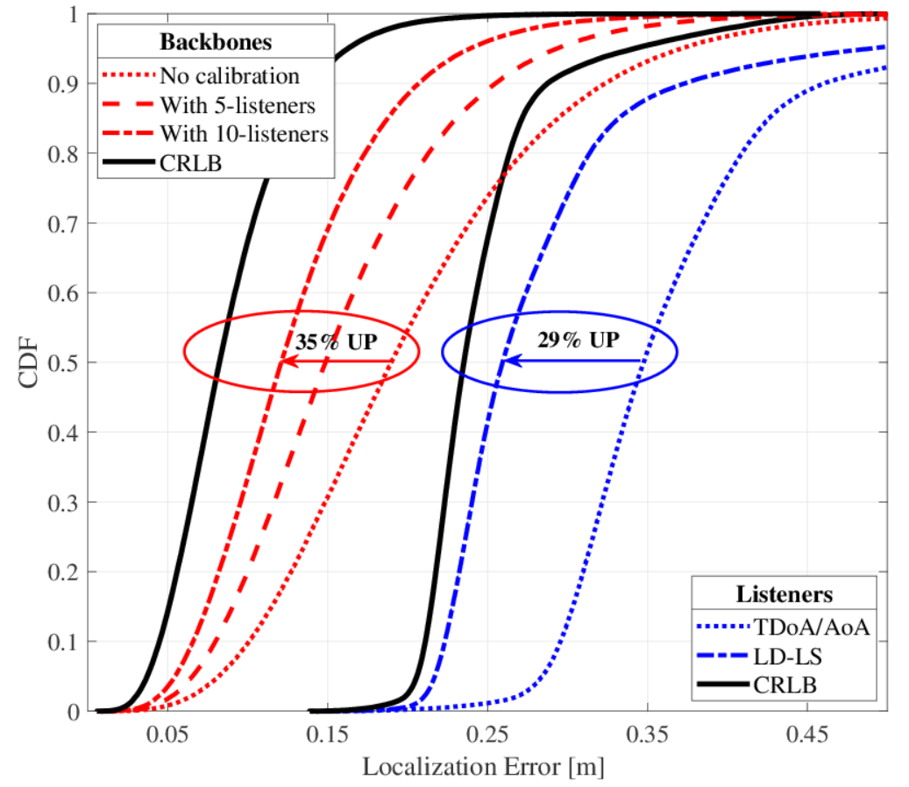 |
Localizaition performance of DRFS for dynamic scence
| The GNA strategy changes the anchor configuration when topologically deformed | The DRFS (in blue) significantly reduces error accumulation |
|---|---|
 |
 |
The simulation platform is able to visually diplay the real-time localization results and RMSE
| Display of the simulated data | Display of the external input data |
|---|---|
 |
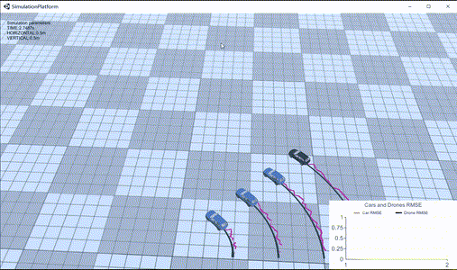 |
Hardware Implementation in Static Scenes
Illustrations of the hardware platform
| The intelligent agent (vehicle) and its architecture diagram |
|---|
 |
| The OptiTrack motion capture system | Photo of the experiment in an actual scene |
|---|---|
| 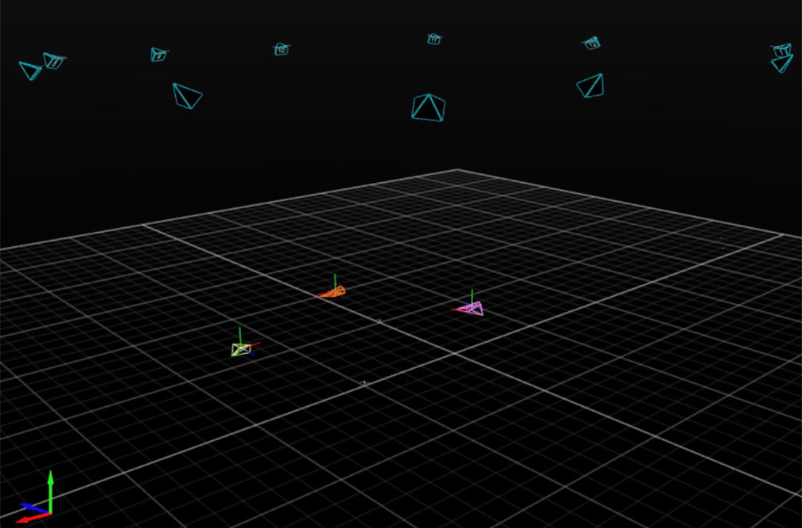 | 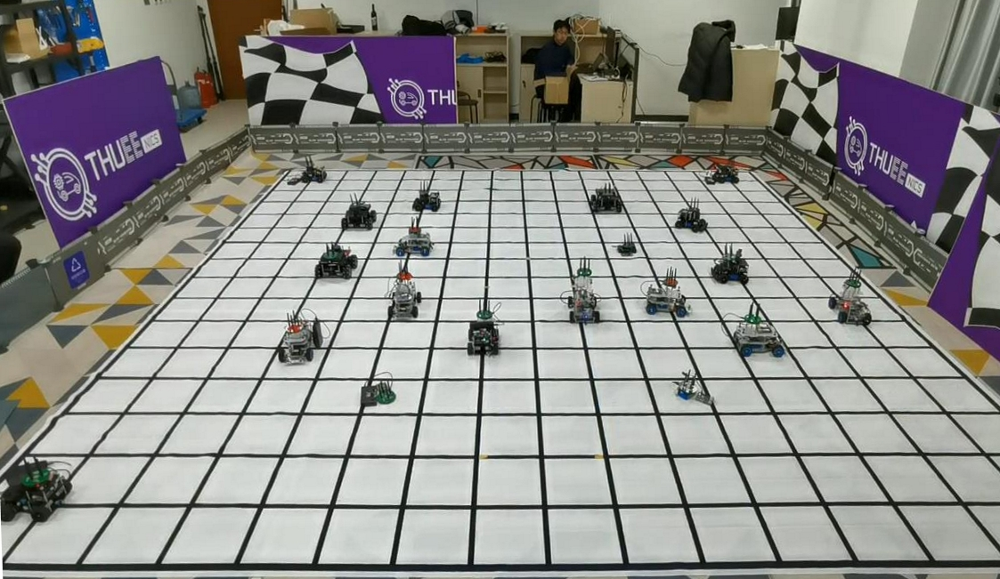 |
Rectangular placement
| Ideal topology | Estimated topology | Localization results |
|---|---|---|
 |
 |
 |
Random placement
| Ideal topology | Estimated topology | Localization results |
|---|---|---|
 |
 |
 |
Hardware Implementation in Dynamic Scenes
Translation and rotation invariance in relative localization
| Translation and rotation do not affect topology estimation in relative localizaiton scenarios |
|---|
 |
Real-world experiments on our practical hardware platform
| Extensive real-world experiments validate our system achieves decimeter-level relative localization accuracy |
|---|
 |
Our Related Works
Relative Formation and Obstacle Avoidance with Distributed Multi-agent Reinforcement Learning